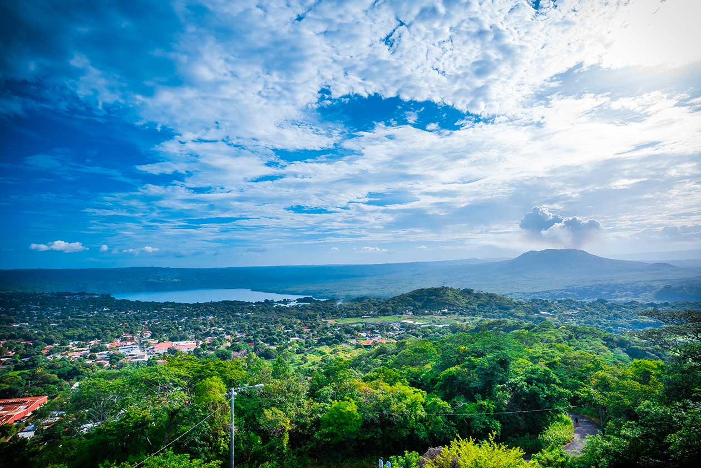
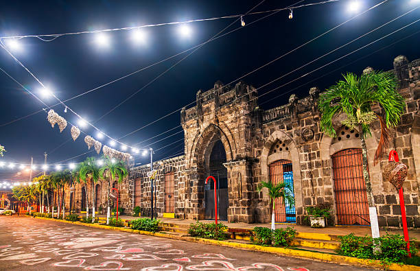
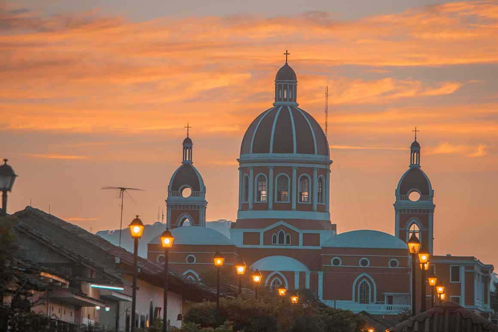
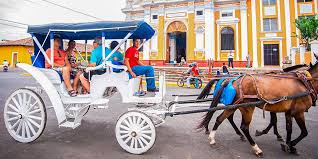
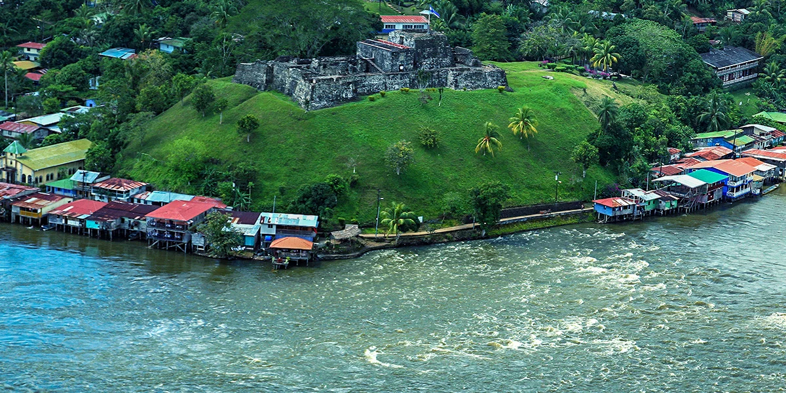
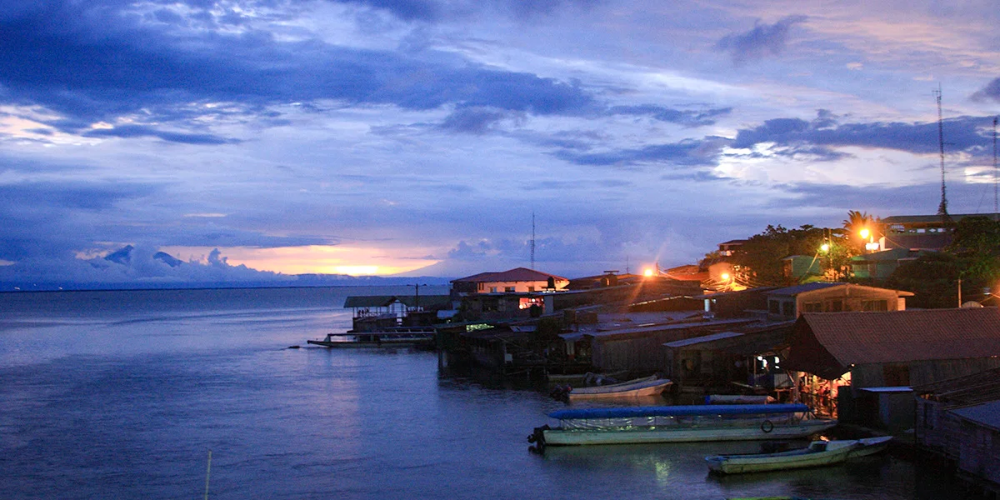

Explora algunos de los paisajes más hermosos de Masaya, Granada y Río San Juan.






Cada rincón de Nicaragua ofrece experiencias únicas, desde volcanes y ciudades coloniales hasta reservas naturales y ríos históricos.